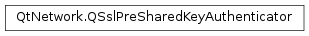

Qt Documentation
QSslPreSharedKeyAuthenticator¶
Synopsis¶
Functions¶
- def
__ne__(, rhs) - def
identity() - def
identityHint() - def
maximumIdentityLength() - def
maximumPreSharedKeyLength() - def
preSharedKey() - def
setIdentity(identity) - def
setPreSharedKey(preSharedKey) - def
swap(other)
Detailed Description¶
The
PySide2.QtNetwork.QSslPreSharedKeyAuthenticatorclass provides authentication data for pre shared keys (PSK) ciphersuites.The
PySide2.QtNetwork.QSslPreSharedKeyAuthenticatorclass is used by an SSL socket to provide the required authentication data in a pre shared key (PSK) ciphersuite.In a PSK handshake, the client must derive a key, which must match the key set on the server. The exact algorithm of deriving the key depends on the application; however, for this purpose, the server may send an identity hint to the client. This hint, combined with other information (for instance a passphrase), is then used by the client to construct the shared key.
The
PySide2.QtNetwork.QSslPreSharedKeyAuthenticatorprovides means to client applications for completing the PSK handshake. The client application needs to connect a slot to theQSslSocket.preSharedKeyAuthenticationRequired()signal:connect(socket, &QSslSocket::preSharedKeyAuthenticationRequired, this, &AuthManager::handlePreSharedKeyAuthentication);The signal carries a
PySide2.QtNetwork.QSslPreSharedKeyAuthenticatorobject containing the identity hint the server sent to the client, and which must be filled with the corresponding client identity and the derived key:void AuthManager::handlePreSharedKeyAuthentication(QSslPreSharedKeyAuthenticator *authenticator) { authenticator->setIdentity("My Qt App"); const QByteArray key = deriveKey(authenticator->identityHint(), passphrase); authenticator->setPreSharedKey(key); }Note
PSK ciphersuites are supported only when using OpenSSL 1.0.1 (or greater) as the SSL backend.
See also
-
class
PySide2.QtNetwork.QSslPreSharedKeyAuthenticator¶ -
class
PySide2.QtNetwork.QSslPreSharedKeyAuthenticator(authenticator) Parameters: authenticator – PySide2.QtNetwork.QSslPreSharedKeyAuthenticatorConstructs a default
PySide2.QtNetwork.QSslPreSharedKeyAuthenticatorobject.The identity hint, the identity and the key will be initialized to empty byte arrays; the maximum length for both the identity and the key will be initialized to 0.
Constructs a
PySide2.QtNetwork.QSslPreSharedKeyAuthenticatorobject as a copy ofauthenticator.See also
PySide2.QtNetwork.QSslPreSharedKeyAuthenticator.operator=()
-
PySide2.QtNetwork.QSslPreSharedKeyAuthenticator.identity()¶ Return type: PySide2.QtCore.QByteArrayReturns the PSK client identity.
-
PySide2.QtNetwork.QSslPreSharedKeyAuthenticator.identityHint()¶ Return type: PySide2.QtCore.QByteArrayReturns the PSK identity hint as provided by the server. The interpretation of this hint is left to the application.
-
PySide2.QtNetwork.QSslPreSharedKeyAuthenticator.maximumIdentityLength()¶ Return type: PySide2.QtCore.intReturns the maximum length, in bytes, of the PSK client identity.
Note
it is possible to set an identity whose length is greater than ; in this case, only the first bytes will be actually sent to the server.
-
PySide2.QtNetwork.QSslPreSharedKeyAuthenticator.maximumPreSharedKeyLength()¶ Return type: PySide2.QtCore.intReturns the maximum length, in bytes, of the pre shared key.
Note
it is possible to set a key whose length is greater than the ; in this case, only the first bytes will be actually sent to the server.
-
PySide2.QtNetwork.QSslPreSharedKeyAuthenticator.__ne__(rhs)¶ Parameters: rhs – PySide2.QtNetwork.QSslPreSharedKeyAuthenticatorReturn type: PySide2.QtCore.bool
-
PySide2.QtNetwork.QSslPreSharedKeyAuthenticator.preSharedKey()¶ Return type: PySide2.QtCore.QByteArrayReturns the pre shared key.
-
PySide2.QtNetwork.QSslPreSharedKeyAuthenticator.setIdentity(identity)¶ Parameters: identity – PySide2.QtCore.QByteArraySets the PSK client identity (to be advised to the server) to
identity.Note
it is possible to set an identity whose length is greater than
PySide2.QtNetwork.QSslPreSharedKeyAuthenticator.maximumIdentityLength(); in this case, only the firstPySide2.QtNetwork.QSslPreSharedKeyAuthenticator.maximumIdentityLength()bytes will be actually sent to the server.
-
PySide2.QtNetwork.QSslPreSharedKeyAuthenticator.setPreSharedKey(preSharedKey)¶ Parameters: preSharedKey – PySide2.QtCore.QByteArraySets the pre shared key to
preSharedKey.Note
it is possible to set a key whose length is greater than the
PySide2.QtNetwork.QSslPreSharedKeyAuthenticator.maximumPreSharedKeyLength(); in this case, only the firstPySide2.QtNetwork.QSslPreSharedKeyAuthenticator.maximumPreSharedKeyLength()bytes will be actually sent to the server.
-
PySide2.QtNetwork.QSslPreSharedKeyAuthenticator.swap(other)¶ Parameters: other – PySide2.QtNetwork.QSslPreSharedKeyAuthenticatorSwaps the
PySide2.QtNetwork.QSslPreSharedKeyAuthenticatorobjectauthenticatorwith this object. This operation is very fast and never fails.
© 2018 The Qt Company Ltd. Documentation contributions included herein are the copyrights of their respective owners. The documentation provided herein is licensed under the terms of the GNU Free Documentation License version 1.3 as published by the Free Software Foundation. Qt and respective logos are trademarks of The Qt Company Ltd. in Finland and/or other countries worldwide. All other trademarks are property of their respective owners.